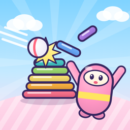

Stack Smash!
Knock down a stack of seven stones, then race to rebuild it while the other team tries to bonk you with the ball. Play against bots, with friends nearby, or online with Game Center.
Need help? Email support@soumyamahunt.com. Please include your device model and iOS version if something isn't working.
Frequently asked questions
How do I play?
Tap Play vs Bots › How to play for a short guided tutorial covering attacking (throw, grab, stack, dodge) and defending (catch, bonk, pass).
How do I restore Stack Smash Plus on a new device?
Open Go Plus on the main menu and tap Restore Purchases, using the same Apple Account you subscribed with.
How do I cancel my subscription?
Go to Settings › your name › Subscriptions › Stack Smash Plus. Apple handles all billing; cancelling stops the next renewal and you keep Plus until the end of the current period.
Why do I see ads?
Ads keep the game free. They only appear between matches, never during play. Stack Smash Plus removes them. You can change your ad privacy choices with the ✋ button on the main menu.
Nearby play can't find my friend
Make sure both devices have Wi-Fi and Bluetooth turned on and have allowed Stack Smash to use the Local Network (Settings › Privacy & Security › Local Network).
Voice chat isn't working
Tap the mic button during a nearby or online match, and allow microphone access when asked (or in Settings › Privacy & Security › Microphone). Voice chat is live only and never recorded.
Support
Stack Smash Plus supports the game from inside it. You can also support all my apps on Patreon, which helps cover the developer account and keeps them maintained.